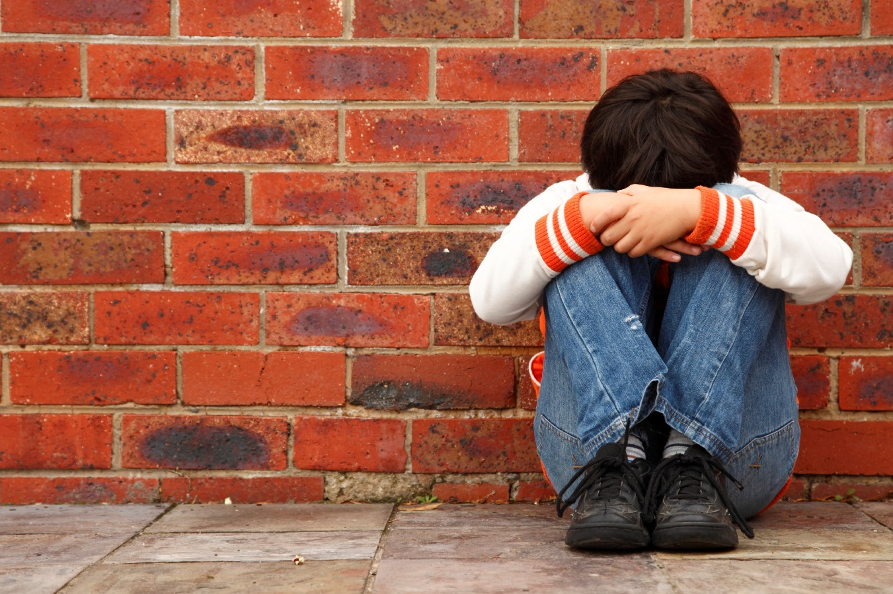

El bullying se manifiesta de diversas formas, que dependen de la situación en que se presenten. Una forma de clasificarlas es:
- Bullying psicoemocional. Son acciones u omisiones que desvalorizan, intimidan o controlan. Pueden alterar la autoestima y afectar aspectos cognitivos, conductuales, afectivos o sociales del estudiante. Por ejemplo, prohibiciones, coacciones, amenazas, humillaciones o chantajes.
- Bullying físico directo. Son acciones u omisiones intencionales que causan daño corporal. Por ejemplo, empujones, golpes o la negativa a brindar ayuda en caso de necesitarla.
- Bullying físico indirecto. Implica daños a las pertenencias de los estudiantes. Por ejemplo, sustracción, destrucción, desaparición, ocultamiento o retención de objetos personales.
- Bullying sexual. Son acciones u omisiones que lesionan la libertad, seguridad e integridad psicosexual. Por ejemplo, hostigamiento, acoso, violación, uso denigrante de la imagen o la omisión de denunciar una situación de acoso.
- Bullying verbal. Es el uso del lenguaje para manifestar acciones violentas. Por ejemplo, insultos, humillación, desvalorización o asignación de sobrenombres descalificativos.
- Ciberbullying. Es la violencia que se ejerce mediante el uso de plataformas virtuales y herramientas tecnológicas. Suele ser masiva y anónima. Por ejemplo, a través de redes sociales, mensajes de texto, foros o páginas web.

